独自ドメインを持つことで、自分専用、会社専用のメールアドレスを作ることが出来ます。
仮に”エージェント”という会社であれば、「agent.jp」という独自ドメインを登録することで、会社用アドレス「info@agent.jp」や、社員用アドレス「aaa@agent.jp」「bbb@agent.jp」といったメールアドレスが作れるようになります。
自分のホームぺージ用に独自ドメインを登録する場合だと、当サイトであれば「domain-server-study.com」という独自ドメインを持っていて、「info@domain-server-study.com」のようなメールアドレスを作成しています。
作ったメールアドレスは、パソコン備え付けのメーラーであったり、Gmailのようなフリーメールのサービスに設定をして使うことが出来ます。
独自ドメインを使って専用メールアドレスを作る場合、どのような準備が必要になるのか当ページで解説してみたいと思います。
この準備でメールアカウントを作成することが出来ます。
専用メールアドレスを作るためには、まず独自ドメインの登録を行わなくてはいけません。 「お名前ドメイン」や「ムームードメイン」などのドメイン会社で登録を行います。
仮に「abc.co.jp」という独自ドメインを登録したとします。この場合、次のようなメールアドレスが作れることになります。
「info@abc.co.jp」を作る
「t.yamada@abc.co.jp」を作る
「info@abc.co.jp」を作る
「@abc.co.jp」の部分は独自ドメインになります。そして、赤字で表示している部分は自分で考えることが出来ます。
独自ドメインを持つための2つの注意点
独自ドメインを登録するときに気を付けて欲しい点がいくつかあります。
これから何年もメールアドレスとして人が見ることになりますので、出来る限り普遍的なドメイン名にした方がいいと考えています。
（参照：独自ドメインの決め方がわからない時に考える5つの方法）
また、ドメインの登録期間は1年ごとになり、その度に料金を支払います。料金の支払い忘れをする方も多くなっているので「自動支払い設定」などを設定しておきましょう。
独自ドメインを持ったら、次にレンタルサーバーを借りましょう。
何故、レンタルサーバーを借りるのかと言うと、 独自ドメインはURLを登録する権利を持つだけで、メールアドレスを作った場合の メールデータの保管や設定などはレンタルサーバーで行うようになっているため。
そのため、メールアドレスを作る場合や、 社員が増えて「メールアドレスを追加したい」と考えた場合も、 設定はレンタルサーバー側の管理画面で行うことになります。
今回はレンタルサーバーを「エックスサーバー」で借りたと仮定して、エックスサーバーの管理画面を用いてメールアドレスの作り方について説明していきます。
どのレンタルサーバーを借りるべきなのか悩むところではありますが、 2020年であればエックスサーバーやConohaWingが人気になっています。
独自ドメインを登録しレンタルサーバーを借りたら、次はメールアドレスを作るための各種設定を実施していきます。
まずは、レンタルサーバー側の管理画面で「独自ドメイン登録」を行いましょう。
当サイトであれば「domain-server-study.com」がドメインになりますので、 このドメイン名をレンタルサーバーに登録する形になります。
「ドメイン登録」を設定する順序
（１）エックスサーバーの管理画面にログインします。次に「ドメイン設定」をクリックします。
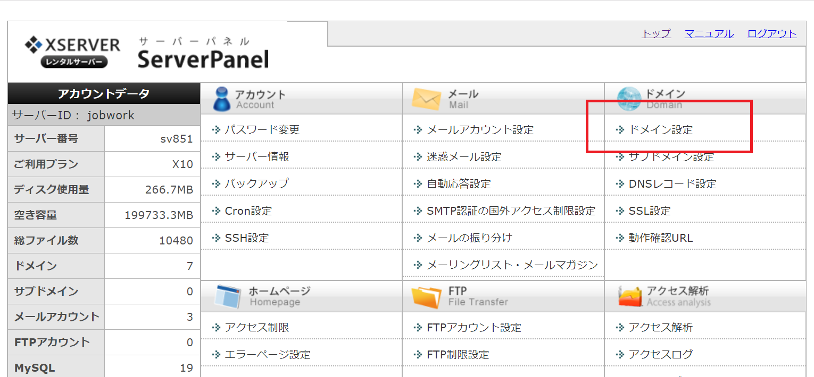
（２）「ドメイン設定」＞「ドメイン設定追加」をクリックします。
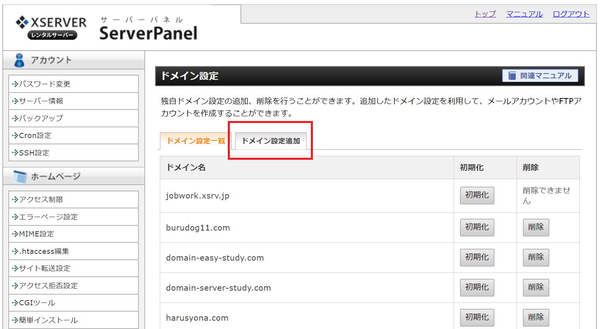
（３）自分で取得した独自ドメインを①に入力して、その後に「確認画面」をクリックします。
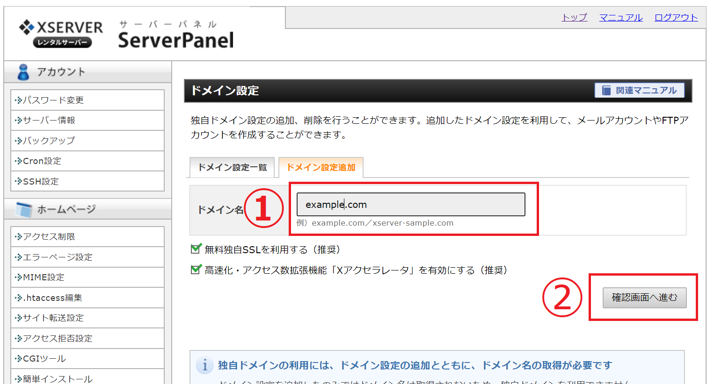
④入力したドメイン名を確認し「追加」をクリックします。
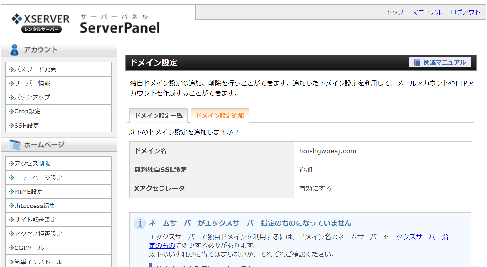
この時に無料独自設定は「追加」、Ｘアクセラレータは「有効にする」 となっていると思いますが、これはこのままで問題ありません。
また「ネームサーバーがエックスサーバー指定のものになっていません」などネームーサーバーについての表示がありますが、後程設定するのでこのままで問題ありません。
エックスサーバーの場合は、この設定により「これからこのドメインを活用していきます」という意味でドメイン登録が完了になります。
どのレンタルサーバー会社であっても、ドメイン登録を行う設定箇所があります。 同様に設定してください。
ドメイン登録が完了したら、次にメールアカウントを追加しましょう。
ドメイン設定が完了したら、次に行うのがメールアドレスの設定になります。 ここの設定でメールアドレスを生成することになります。
ちゃんとドメイン設定が完了していないと、メールアドレスが作れませんので注意してください。
メールアドレスを作る設定の順序
①エックスサーバーの管理画面から「メールアカウント設定」を選択します。
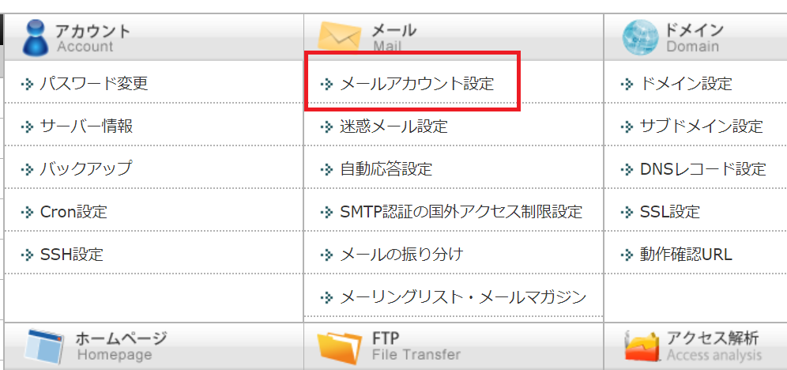
②「メールアカウント設定」の画面から独自ドメインの「選択」を選ぶ
「メールアカウント設定」の画面にはこれまでに登録している独自ドメインが全て表示されいます。自分がメールアドレスを作りたい独自ドメインの「選択」を選びましょう。
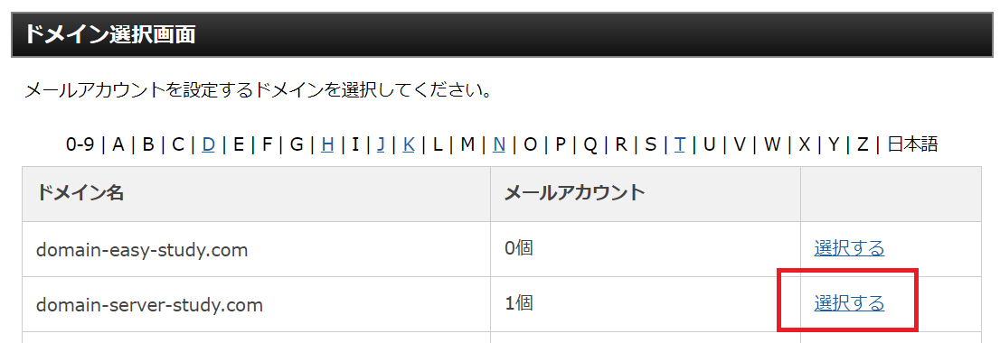
③「メールアカウント」の追加を選択
「選択」を選んでから、次の画面で「メールアカウントの追加」を選びます。
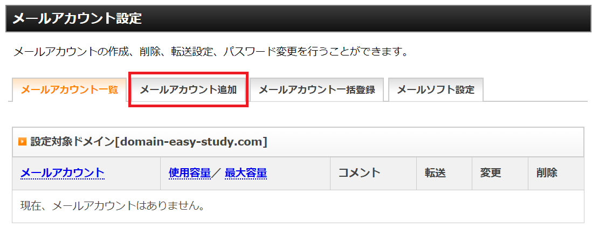
④「メールアカウント追加」の画面からメールアドレスを生成する
「メールアカウント追加」の画面が開いたら、この画面からメールアドレスを生成することになります。自分が考えたメールアドレスとパスワードを入力してください（好きな任意の文字列を入力することが出来ます）
・メールアドレス（メールアカウント）の入力
・パスワードを入力
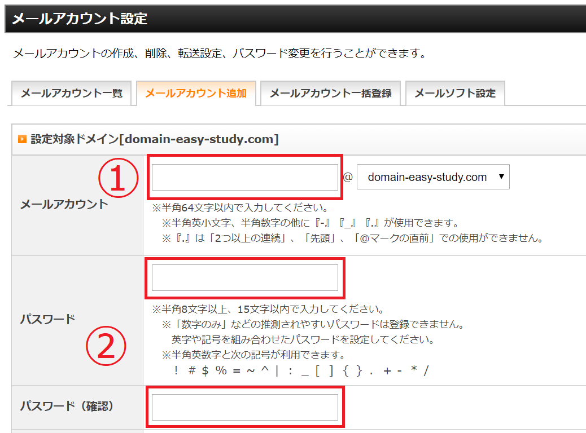
容量やコメントについては後からも変更できるので初期状態のままで大丈夫です。 アドレス名とパスワードを入れたら「確認画面」を選択しましょう。
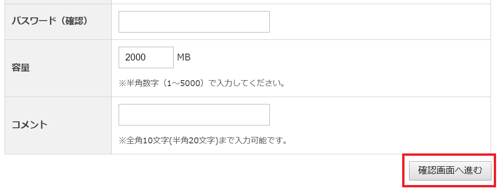
⑤「追加する」でメールアドレス作成が完了
「追加する」を選択することで、メールアドレスの登録が完了となります。 この時点で専用のメールアドレスが1つ作られたことになります。
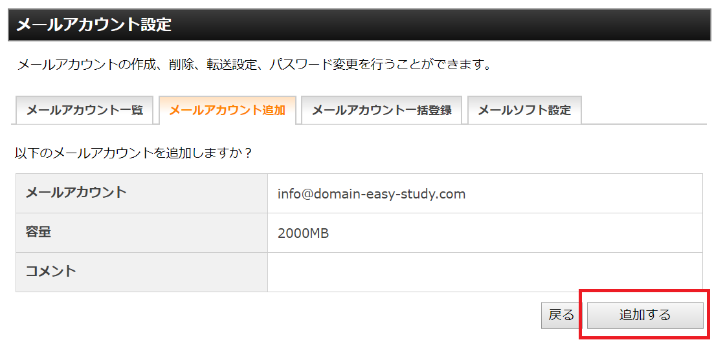
⑥作成したメールアドレスを確認しましょう。
もう一度メールアカウント設定から、メールアドレスが作れているか確認しておきましょう。
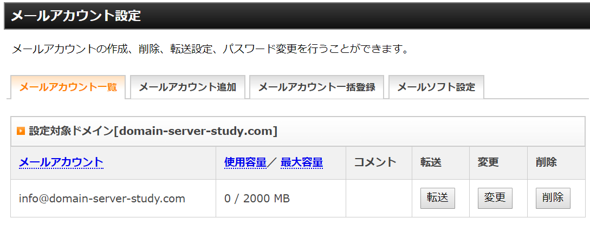
このようにメールアドレスが表示されていれば、アドレス作成が完了しています。
この時点でメールアドレスは生成できていますが、まだ独自ドメインとレンタルサーバーが紐づいていません。
ドメイン登録しているドメイン会社が「ムームドメイン」であれば、ムームードメインの管理画面に入って「エックスサーバーに向けて紐づけます」と言うネームサーバー設定を行ってください。
このネームサーバー設定（紐づけ設定）をしていないと、独自ドメインがどのレンタルサーバーで活躍するのか、わからないまま浮いてしまっている状態になります。 メールをするだけでもしなくてはいけない設定になります。
ネームサーバー設定については別ページで詳しく説明しています
（参照：【かんたん解説】ネームサーバー設定をわかりやすく解説します）
メールアドレスを作ったら、次は「Outlook」など各種メーラーで設定をする形になります。 Webメールとしてエックスサーバーの管理画面に入ってメールを活用することも出来ます。
各種メーラーでの設定についてはメールソフトの設定（エックスサーバー）を参照してください。
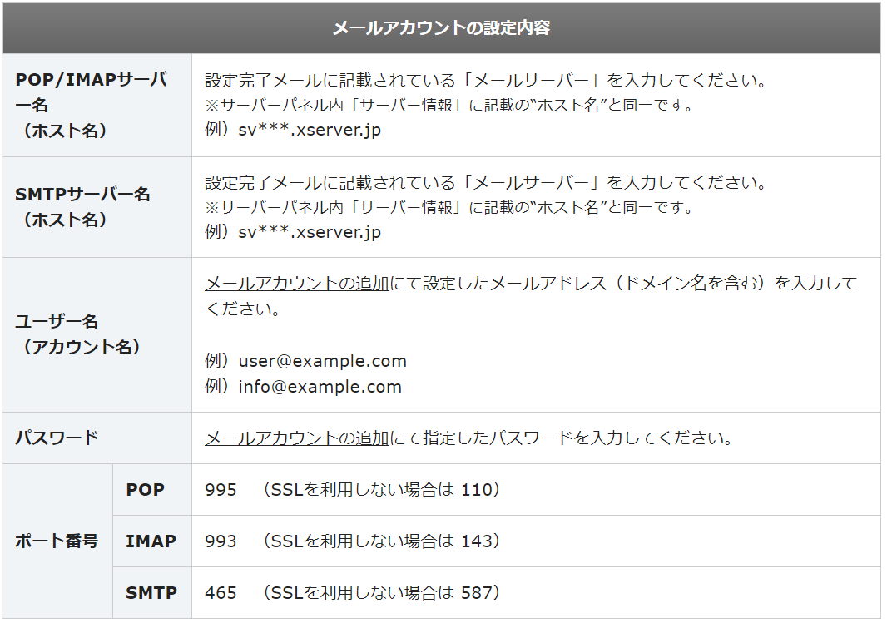
以上で、レンタルサーバーと独自ドメインを使った、専用メールアドレス作成の準備解説とさせて頂きます。
このように独自ドメインとレンタルサーバーがあれば、自分の好きなメールアドレスをいくつでも幾つでも作ることが出来るようになり個人だけでなく、会社でビジネス用にメールアドレスの管理をすることも可能になります。
今回は独自ドメインを活用したメールアドレス作成について説明をしましたが、 Gmailなどのフリーメールを作る方法などメールサービス全般についても解説をしています。 こちらも良かったら参照して見てください。
*1：ドメイン会社のメールサービスも含む

demiglaze
Web制作を始めて約19年になります（HTML/css、Photoshop、Webマーケティング）。2005年から当サイトの運営を開始。 これまでに300個以上のドメインを取得、10社を超えるレンタルサーバーを利用してきました。